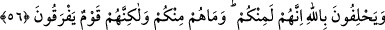
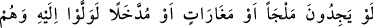
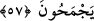
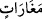
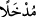
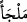

56. Sizden olduklarına Allah’a yemin ediyorlar. Oysa onlar sizden değildirler.
Fakat onlar korkak bir topluluktur.
Münâfıklar “sizden” yani müslümanlar cümlesinden “olduklarına Allah’a yemin
ediyorlar. Oysa” kalplerinde taşıdıkları küfürden dolayı “onlar sizden değildirler.
Fakat onlar korkak bir topluluktur.” Müşriklere yaptığınızı kendilerine de
yapmanızdan korkuyorlar. Takiyye yaparak güya müslüman olduklarını söylüyorlar ve
bunu da sahte bir îman ile desteklemeye çalışıyorlar.
57. Eğer sığınacak bir yer yahut mağaralar ya da sokulacak bir delik bulsalardı,
hemen oraya doğru koşarlardı.
“Eğer” o münâfıklar, “sığınacak bir yer” dağ başı, kale, ada gibi kendisine
sığınılacak muhkem bir yer “yahut” yüksek dağlarda bulunan içerisinde saklanacakları
küçük ya da büyük “mağaralar ya da sokulacak bir delik” yer altında bulunan kuyu
gibi saklanıp sığınacakları bir dehliz, tünel ya da Haddâdî’nin tefsirinde geçtiği gibi
aralarına katılacakları ve kendilerini sizden koruyacakları bir topluluk “bulsalardı,
hemen oraya” zikredilenlerden birine “doğru koşarlardı.” Koşarak o tarafa yönelip
giderlerdi. Gemi azıya alan at gibi onlar o kadar hızlı giderlerdi ki hiçbir şey onları geri
çeviremezdi. Bunu da sizinle bir arada bulunmamak, sizden uzaklaşmak için yaparlardı.
Şeyhzâde demiştir ki: “
(mağaralar)” ve “
(delik)” kelimelerinin “
(sığınacak yer)” kelimesine atfedilmesi hâs bir kelimenin âm kelime üzerine atfedilmesi
kabilindendir. İfade, onların sığınacakları şeyi elde etme konusunda âcizliklerinin
ortaya çıktığını göstermektedir. Çünkü “melce”, insanın hangi türden olursa olsun
sığınacağı ve siper edineceği sığınak, kaçacak yer mânâsına gelir.
Geçmiş zaman mânâsı kastedildiği halde âyette şart cümlesinde gelecek zaman
siygasının tercih edilmesi, münâfıkların aradıkları şeyi hiçbir zaman bulamayacaklarını
ifade etmek içindir.
Onlar, her ne kadar kendilerinin sizden olduklarına dair yemin etseler de bu
yeminlerinde yalan söylemektedirler. Yurtlarından çıkmaları mümkün olmadığı için
öldürülme korkusundan dolayı yemin ederler. Yurtlarını ve mallarını terk etmeye güçleri
yetse, kalelere veya dağlarda bulunan mağaralara ya da yerin altındaki deliklere
sığınma imkanı bulsalar, sizden gizlenmek üzere sizi görmekten, sizinle karşılaşmaktan
hoşlanmadıkları için bunu kesinlikle yaparlardı.
Bu âyette onların tam bir azgınlık ve taşkınlık içerisinde oldukları ortaya konulmuştur.